Causal impact of masks, policies, behavior on early COVID-19 pandemic in the U.S.
Counterfactuals
Victor Chernozhukov, Paul Schrimpf, Hiro Kasahara
17 July, 2020
1 Data Preparation
2 Counterfactuals
#' Given an estimated felm model with lags and differences, returns a
#' function that simulates the model.
#'
#' @param m estimated felm model
#' @param df Data
#' @param dvar Name of variable repressenting differences in the
#' model. dvar should be a difference of length difflag.
#' @param var Name of varaible representing levels in the model.
#' @param difflag difference length for dvar
#' @param lhsdiff if true the outcome is also dvar with the same
#' difflag, if not the outcome is var
#'
#' @return A function with arguments idvar==value of identifier for
#' which to simulate and shockgen=function(n) that generates values
#' for residuals. The default value of shockgen is to resample model
#' residuals with replacement. The function returns a simulated path
#' var beginning from the initial values for id==idvar and using the
#' exogenous covariates of id==idvar.
#'
#' Example:
#' df <- df[order(df$id,$df$t),]
#' df$dy <- paneldiff(df$y, df$id, df$t, lag=2)
#' fmla <- dy ~ lag(y,3) + lag(dy,1) + x
#' # hack to get get id
#'
#' sim <- createforwardsim(fmla, df, "dy", "y", 2, TRUE)
#' # simulate with errors set to 0's
#' yhat <- sim(df$id[1], function(n) fill(0, n))
#' #' # simulate sampling residuals with replacement
#' yhat <- sim(df$id[1])
createforwardsim <- function(m, df, id="state",
dvar="dlogdc", var="logdc",
difflag=7, lhsdiff=TRUE) {
m$coef[is.nan(m$coef)] <- 0
# get index of observations used in mdl
df$idxcfs <- 1:nrow(df)
mid <- felm(update.felm.formula(m$formula, idxcfs ~ .), data=df, keepX=TRUE)
idx <- mid$response
# This regexp will match dvar if preceded by start of string or (
# and followed by end of string or ,
di <- grepl(sprintf("(^|\\()%s(,|$)",dvar), rownames(m$coef))
li <- grepl(sprintf("(^|\\()%s(,|$)",var), rownames(m$coef))
dc <- m$coef[di]
names(dc) <- rownames(m$coef)[di]
lc <- m$coef[li]
names(lc) <- rownames(m$coef)[li]
# exogenous part of model
if (!is.null(getfe(m))) {
stop("createforwardsim not implemented with fixed effects. Include factors in the formula instead")
}
xt <- mid$X %*% (m$coef * as.numeric(!(di | li)))
#xtold <- m$fitted.values - m$X %*% (m$coef * as.numeric(di | li))
## convert into AR model
llags <- as.numeric(gsub("lag\\(.+, (\\d+)\\)","\\1", names(lc)))
dlags <- as.numeric(gsub("lag\\(.+, (\\d+)\\)","\\1", names(dc)))
maxlags <- max(c(llags, dlags+difflag, ifelse(lhsdiff, difflag, 0)))
ar <- rep(0, maxlags)
if (lhsdiff) ar[difflag] <- ar[difflag] + 1
ar[llags] <- ar[llags] + lc
ar[dlags] <- ar[dlags] +dc
ar[dlags+difflag] <- ar[dlags+difflag]-dc
if (!is(df, "pdata.frame")) {
warning("df is not a pdata.frame. This function assumes df is sorted by id, time, and within each id, time is consecutive. Results will be incorrect if these assumptions are false.")
} else {
stopifnot(all(is.pconsecutive(df)))
}
sim <- function(idvar, shockgen=function(n=1) { sample(m$residuals, size=n,
replace=TRUE)},
samplecoefs=FALSE, nsim=100) {
ids <- df[idx,id]
if (samplecoefs) {
V <- vcov(m)
nac <- is.na(m$coefficients)
e <- rep(0,nrow(V))
Vnona <- V[!nac,!nac]
e[!nac] <- t(rmvnorm(1, mean=rep(0, nrow(Vnona)), sigma=Vnona))
dc <- m$coef[di] + e[di]
lc <- m$coef[li] + e[li]
## convert into AR model
ar <- rep(0, maxlags)
if (lhsdiff) ar[difflag] <- ar[difflag] + 1
ar[llags] <- ar[llags] + lc
ar[dlags] <- ar[dlags] +dc
ar[dlags+difflag] <- ar[dlags+difflag]-dc
x <- xt[ids==idvar] + (mid$X[ids==idvar,] %*% (e * as.numeric(!(di | li))))
} else {
x <- xt[ids==idvar]
}
date <- df$date[idx[df[idx,id]==idvar]]
names(date) <- NULL
it0 <- which(df$date==date[1] & df[,id]==idvar)
Y0 <- as.vector(sapply(1:(maxlags), function(k) lag(df[,var], k)[it0]))
dY0 <- as.vector(sapply(1:(maxlags), function(k) lag(df[,dvar], k)[it0]))
lagy0 <- Y0-dY0
check <- lagy0[1:(length(Y0)-difflag)]- Y0[(difflag+1):length(Y0)]
stopifnot(all(abs(check)<1e-8, na.rm=TRUE))
na0 <- is.na(Y0[(difflag+1):length(Y0)])
Y0[(difflag+1):length(Y0)][na0] <- lagy0[1:(length(Y0)-difflag)][na0]
yt <- matrix(0,nrow=nsim,ncol=length(x))
e <- matrix(shockgen(length(x)*nsim),nrow=nsim)
Y0 <- t(matrix(rep(Y0,nsim),ncol=nsim))
Y <- Y0
for (t in 1:length(x)) {
yt[,t] <- x[t] + Y %*% ar + e[,t]
#Y <- c(yt[t], Y[-length(Y)])
Y[,2:ncol(Y)] <- Y[,1:(ncol(Y)-1)]
Y[,1] <- yt[,t]
}
return(list(y=cbind(Y0[, ncol(Y0):1],yt),
date=c(date[1]-((maxlags):1),date)))
}
}
meanandci <- function(yi, cfyi, date, p=0.9, difflag=7) {
y <- colMeans(yi)
cfy <- colMeans(cfyi)
dy <- matrix(NA,nrow=nrow(y),ncol=ncol(y))
dy[(difflag+1):nrow(y),] <- diff(y,difflag)
dcfy <- matrix(NA,nrow=nrow(cfy),ncol=ncol(cfy))
dcfy[(difflag+1):nrow(cfy),] <- diff(cfy,difflag)
statframe <- function(y,suffix) {
d <- data.frame(m=rowMeans(y, na.rm=TRUE),
cl=apply(y, 1, function(x) quantile(x, (1-p)/2,na.rm=TRUE)),
ch=apply(y, 1, function(x) quantile(x,1-(1-p)/2,na.rm=TRUE)))
names(d) <- paste(names(d), suffix, sep="")
d
}
cbind(data.frame(date=date),
statframe(colMeans(exp(yi)),"y"), statframe(dy,"dy"), statframe(colMeans(exp(cfyi)),"cf"),
statframe(dcfy,"dcf"), statframe(colMeans(exp(cfyi)-exp(yi)),"p"),
statframe(dcfy-dy,"dp"))
}
nopstatesim <- function(st, nsim=200, simobs, simcf, data, var="logdc", dvar="dlogdc") {
seed <- .Random.seed
set.seed(seed)
yi <- replicate(nsim, simobs(st, samplecoefs=TRUE, nsim=nsim/2)$y)
set.seed(seed)
cfyi <- replicate(nsim, simcf(st, samplecoefs=TRUE, nsim=nsim/2)$y)
date <- simobs(st, samplecoefs=TRUE, nsim=2)$date
est <- meanandci(yi,cfyi, date)
est <- merge(est, data.frame(state=st,
obs=exp(data[data$state==st, var]),
dobs=data[data$state==st, dvar],
date=data[data$state==st,]$date),
by="date", all=TRUE)
return(list(edf=est, y=yi, cfy=cfyi))
}
cfplots <- function(st, cfdata=NULL, simobs=NULL, simcf=NULL,
yvar="cases", data) {
xlims <- datelims
pds <-
c("Mandate.face.mask.use.by.employees.in.public.facing.businesses",
"Date.closed.K.12.schools",
"Stay.at.home..shelter.in.place",
"Closed.movie.theaters",
"Closed.restaurants.except.take.out",
"Closed.non.essential.businesses")
if (is.null(cfdata)) {
est <- nopstatesim(st, simobs=simobs, simcf=simcf, data=data)
} else {
est <- subset(cfdata, cfdata$state==st)
}
dt <- c()
labels <- c()
for (lbl in pds) {
d <- unique(data[data$state==st,lbl])
i <- which(dt==d)
if (length(i)==0) {
if (length(dt)==0)
dt <- d
else
dt <- c(dt,d)
labels <- c(labels,lbl)
} else {
labels[i] <- paste(labels[i],lbl,sep=", ")
}
}
labels <- labels[!is.na(dt)]
dt <- dt[!is.na(dt)]
figl <-
ggplot(data=est, aes(x=date, y=obs)) +
geom_line(aes(color="Observed", fill="Observed"), size=1.5) +
geom_line(aes(y=my,color="Estimated"), size=1.2) +
#geom_ribbon(aes(ymin=cly, ymax=chy, fill="Estimated"),
# alpha=0.3, show.legend=FALSE) +
geom_line(aes(y=mcf, color="Counterfactual"), size=1.2) +
#geom_ribbon(aes(ymin=clcf, ymax=chcf, fill="Without Policies"),
# alpha=0.3, show.legend=FALSE) +
figtheme + colors() + colors_fill() +
ylab(sprintf("%s in past week",yvar)) + labs(color="") +
theme(legend.position=c(0.2, 0.8)) +
ggtitle(TeX(sprintf("%s in past week",yvar))) + xlim(xlims)
figp <- ggplot(data=est, aes(x=date, y=mp)) +
geom_line(size=1.2) +
geom_ribbon(aes(ymin=clp, ymax=chp), alpha=0.3) +
ylab(sprintf("Change in %s in past week", yvar)) + figtheme + colors() + colors_fill() +
ggtitle(TeX(sprintf("Change in %s",yvar))) +
xlim(xlims) +
annotate("text",x=dt, y=rep(0.01,length(dt)),
label=gsub("\\."," ", labels), size=4, angle=90, hjust=0)
figd <- ggplot(data=est, aes(x=date, y=dobs)) +
geom_line(aes(y=mdcf, color="Counterfactual"), size=1.5) +
geom_line(aes(color="Observed", fill="Observed"), size=1.5) +
geom_line(aes(y=mdy,color="Estimated"), size=1.5) +
#geom_ribbon(aes(ymin=cldy, ymax=chdy, fill="Estimated"),
# alpha=0.3, show.legend=FALSE) +
#geom_ribbon(aes(ymin=cldcf, ymax=chdcf, fill="Without Policies"),
# alpha=0.3, show.legend=FALSE) +
figtheme + colors() + colors_fill() +
ylab(TeX(sprintf("$\\Delta \\log \\Delta %s$",toupper(substring(yvar,1,1))))) +
labs(color="") +
theme(legend.position=c(0.8, 0.8)) +
ggtitle(TeX(sprintf("$\\Delta \\log \\Delta %s$",toupper(substring(yvar,1,1))))) +
xlim(xlims)
figdp <- ggplot(data=est, aes(x=date, y=mdp)) +
geom_line(size=1.2) +
geom_ribbon(aes(ymin=cldp, ymax=chdp), alpha=0.3) +
ylab(TeX(sprintf("Change in $\\Delta \\log \\Delta %s$",toupper(substring(yvar,1,1))))) +
figtheme + colors() + colors_fill() +
ggtitle(TeX(sprintf("Change in $\\Delta \\log \\Delta %s$",toupper(substring(yvar,1,1))))) +
xlim(xlims) +
annotate("text",x=dt, y=rep(0.01,length(dt)),
label=gsub("\\."," ", labels), size=4, angle=90, hjust=0)
return(list(figd=figd, figdp=figdp, figl=figl, figp=figp))
}
# Extract E[log(dc) |state, t, parameters] with parameters ~ N(m$coef, vcov(m))
getmeans <- function(sl) {
date <- sl$edf$date[!is.na(sl$edf$my)]
state <- sl$edf$state[!is.na(sl$edf$state)]
stopifnot(length(unique(state))==1)
y0 <- apply(exp(sl$y), c(2,3), mean)
long <- melt(y0)
names(long)[names(long)=="value"] <- "meany0"
log0 <- apply(sl$y, c(2,3), mean)
long1 <- melt(log0)
names(long1)[names(long1)=="value"] <- "meanlog0"
long <- merge(long, long1, by=c("Var1","Var2"))
y1 <- apply(exp(sl$cf), c(2,3), mean)
long1 <- melt(y1)
names(long1)[names(long1)=="value"] <- "meany1"
long <- merge(long,long1, by=c("Var1","Var2"))
log1 <- apply(sl$cf, c(2,3), mean)
long1 <- melt(log1)
names(long1)[names(long1)=="value"] <- "meanlog1"
long <- merge(long, long1, by=c("Var1","Var2"))
long$date <- date[long$Var1]
long$state <- unique(state)
long$sidx <- long$Var2
long$Var1 <- NULL
long$Var2 <- NULL
return(long)
}infovars <- list(c("dlogdc", "logdc", "dlogdc.national", "logdc.national")) #,
#c("dlogdc", "logdc"))
#infovars2 <- list(c( "logdc"))
tvars <- "dlogtests"
xlist <-list("")
interactions <-list("month", statevars)
ilist <- list(interactions) #, interactions)
iv <- list("0") #,"(testratedc ~ lag(testratedc,14))")
L <- 14
sdf <- subset(df, df$date>=datelims[1]) #+L)
regs <- mainregressions(sdf,
"dlogdc", pols, bvars, infovars, tvars, xlist, ilist, iv, L=L)
m <- regs$piy[[1]]$reg
cnames <- c(pols, infovars[[1]])
di <- dieff_table(lapply(regs$pib[[1]][1:4], function(x) x$reg$coef[,1]),
regs$pbiy[[1]]$reg$coef[,1],
regs$piy[[1]]$reg$coef[,1],
policies=cnames)
pib <- lapply(regs$pib[[1]][1:4], function(x) x$reg)
pbiy <- regs$pbiy[[1]]$reg
piy <- regs$piy[[1]]$reg
S <- 999
bs <- bootstrap_felm(sdf, c(pib,list(pbiy,piy)), S=S)
bdi <- lapply(1:S, function(i)
dieff_table(lapply(1:4, function(j) bs[[j]][,i]),
bs[[5]][,i], bs[[6]][,i],
policies=cnames)
)
subcoefs <- function(di, coef) {
for (r in 1:(nrow(di)-1)) {
i <- grep(rownames(di)[r] , rownames(coef))
coef[i,1] <- di[r,"Average"]
}
return(coef)
}
bcoefs <- t(do.call(cbind, lapply(1:S, function(i) {
coef <- matrix(bs[[6]][,i],ncol=1)
rownames(coef) <- rownames(bs[[6]])
return(subcoefs(bdi[[i]],coef ))
})))
V <- cov(bcoefs)
m$coefficients <- subcoefs(di, m$coefficients)
m$vcv <- V
m$clustervcv <- V
m$robustvcv <- V
simmodel <- createforwardsim(m, sdf)
# remove policies
cf <- sdf
cf[,pols] <- 0
nopmodel <- createforwardsim(m, cf)## Warning in chol.default(mat, pivot = TRUE, tol = tol): the matrix is either rank-deficient or
## indefinitererunsim=FALSE
if (!file.exists("cfnop_NI.Rda") || rerunsim) {
cfnoplist <- lapply(unique(sdf$state), function(s)
nopstatesim(s,simobs=simmodel,simcf=nopmodel,data=sdf))
allmeans <- rbindlist(lapply(cfnoplist, getmeans))
save(cfnoplist,allmeans, file="cfnop_NI.Rda")
}
load("cfnop_NI.Rda")
cfnop <- do.call(rbind, lapply(cfnoplist, function(x) x$edf))2.0.1 Removing Policies
We now examine the impact changing from the observed policies to none. For illustrative purpose, we being by focusing on Washington. Figure shows the observed, estimated average, and counterfactual without policies average of \(\Delta \log \Delta C\) in Washington. To compute the estimated and counterfactual paths we use the estimates from column 2 of table . We set initial \(\Delta \log \Delta C\) and \(\log \Delta C\) to their values first observed in the state we are simulating. We hold all other regressors at their observed values. Error terms are drawn with replacement from the residuals. We do this many times and report the average over draws of the residuals. To calculate confidence intervals, we repeat the above with coefficients drawn randomly from their asymptotic distribution. The shaded region is a pointwise 90% confidence interval.
st <- "Washington"
f <- cfplots(st, cfnop, data=df)## Warning: Ignoring unknown aesthetics: fill
## Warning: Ignoring unknown aesthetics: fillgrid.arrange(f$figd, f$figdp, nrow=2, top =
textGrob(st,gp=gpar(fontsize=20,font=2)))Case growth without policies in Washington
grid.arrange(f$figl, f$figp, nrow=2) #,Cases without policies in Washington
#top = textGrob(st,gp=gpar(fontsize=20,font=2)))if (!knitr::is_latex_output()) {
for( st in c("New York", "Florida", "Michigan", "Georgia", "Massachusetts")) {
f <- cfplots(st, cfnop, data=df)
grid.arrange(f$figd, f$figdp, nrow=2, top = textGrob(st,gp=gpar(fontsize=20, font=2)))
grid.arrange(f$figl, f$figp, nrow=2, top = textGrob(st,gp=gpar(fontsize=20, font=2)))
}
}## Warning: Ignoring unknown aesthetics: fill
## Warning: Ignoring unknown aesthetics: fillEffect of Removing Policies
## Warning: Ignoring unknown aesthetics: fill
## Warning: Ignoring unknown aesthetics: fillEffect of Removing Policies
Effect of Removing Policies
## Warning: Ignoring unknown aesthetics: fill
## Warning: Ignoring unknown aesthetics: fillEffect of Removing Policies
Effect of Removing Policies
## Warning: Ignoring unknown aesthetics: fill
## Warning: Ignoring unknown aesthetics: fillEffect of Removing Policies
## Warning: Removed 3 row(s) containing missing values (geom_path).## Warning: Removed 3 row(s) containing missing values (geom_path).
## Warning: Removed 3 row(s) containing missing values (geom_path).Effect of Removing Policies
## Warning: Removed 3 row(s) containing missing values (geom_path).
## Warning: Removed 3 row(s) containing missing values (geom_path).
## Warning: Removed 3 row(s) containing missing values (geom_path).## Warning: Ignoring unknown aesthetics: fill
## Warning: Ignoring unknown aesthetics: fillEffect of Removing Policies
## Warning: Removed 5 row(s) containing missing values (geom_path).## Warning: Removed 5 row(s) containing missing values (geom_path).
## Warning: Removed 5 row(s) containing missing values (geom_path).Effect of Removing Policies
Effect of Removing Policies
states <- c("Washington","Illinois","Massachusetts")
for(st in states) {
f <- cfplots(st, cfnop, data=df)
figdev(sprintf("%s/tex/tables_and_figures/%s-nop-dgrowth.pdf",rootdir,st), width=5,height=3.75)
print(f$figdp)
dev.off()
figdev(sprintf("%s/tex/tables_and_figures/%s-nop-growth.pdf",rootdir,st), width=5,height=3.75)
print(f$figd + ylim(c(-1,5)))
dev.off()
figdev(sprintf("%s/tex/tables_and_figures/%s-nop-cases.pdf",rootdir,st), width=5,height=3.75)
print(f$figl)
dev.off()
figdev(sprintf("%s/tex/tables_and_figures/%s-nop-dcases.pdf",rootdir,st), width=5,height=3.75)
print(f$figp)
dev.off()
}2.1 National
These figures show the average effect on \(\Delta \log \Delta C\) across states, and the total national effect on cases in past week.
abbrv <- unique(df[,c("state","ST")])
cfnop <- merge(cfnop, abbrv, by="state")
nationalplots <- function(alldf,cfdf, cfname, yvar="cases") {
alldf[order(state, sidx, date), dlog1:=c(rep(NA,7),diff(meanlog1,7)), by=.(state, sidx)]
alldf[order(state, sidx, date),dlog0:=c(rep(NA,7),diff(meanlog0,7)), by=.(state, sidx)]
national <- alldf[ , .(diff=sum(meany1-meany0), y0=sum(meany0), dlog=mean(dlog1-dlog0)), by=.(date, sidx)]
adf <- national[, .(mp=mean(diff),
clo=quantile(diff, 0.05),
chi=quantile(diff, 0.95),
rel=mean(diff/y0),
rlo=quantile(diff/y0, 0.05),
rhi=quantile(diff/y0, 0.95),
mlog=mean(dlog, na.rm=TRUE),
llo=quantile(dlog, 0.025, na.rm=TRUE),
lhi=quantile(dlog, 0.975, na.rm=TRUE)
),
keyby=.(date)]
figdlog <- ggplot(cfdf, aes(x=date)) +
#geom_text(aes(y=mdp, label=ST),alpha=0.2) +
geom_point(aes(y=mdp),alpha=0.2, size=0.5) +
xlim(datelims) +
geom_line(data=adf, aes(x=date, y=mlog, color=""), size=2) + figtheme +
geom_ribbon(data=adf, aes(ymin=llo, ymax=lhi, fill=""),alpha=0.3) +
colors() + theme(legend.position="none") +
ylab(TeX(sprintf("Change in $\\Delta \\log \\Delta %s$",
toupper(substring(yvar,1,1))
))) +
colors_fill() +
ggtitle(sprintf("Effect of %s on %s growth",cfname, substring(yvar,1,nchar(yvar)-1)))
figc <- ggplot(cfdf, aes(x=date)) +
#geom_text(aes(y=mp, label=ST),alpha=0.5) +
geom_point(aes(y=mp),alpha=0.2, size=0.5) +
xlim(datelims) +
geom_line(data=adf, aes(x=date, y=mp, color=""), size=2) +
figtheme +
geom_ribbon(data=adf, aes(ymin=clo, ymax=chi, fill=""),alpha=0.3) +
colors() + theme(legend.position="none") +
ylab(sprintf("%s in the past week", yvar)) +
colors_fill() +
ggtitle(sprintf("Effect of %s on %s",cfname, yvar))
figr <- ggplot(adf, aes(x=date, y=rel)) +
xlim(datelims) +
geom_line(aes(color=""), size=2) + figtheme +
geom_ribbon(data=adf, aes(ymin=rlo, ymax=rhi, fill=""),alpha=0.3) +
colors() + theme(legend.position="none") +
ylab(sprintf("relative increase in %s",yvar)) +
colors_fill() +
ggtitle(sprintf("Relative effect of %s",cfname))
return(list(g=figdlog, c=figc, r=figr))
}
figs <- nationalplots(allmeans,cfnop, "removing policies")
figdev(paste(rootdir,"tex/tables_and_figures/us-nop-dgrowth.pdf",sep="/"), width=5,height=3.75)
figs$g## Warning: Removed 12 rows containing missing values (geom_point).## Warning: Removed 12 row(s) containing missing values (geom_path).dev.off()## png
## 2figdev(paste(rootdir,"tex/tables_and_figures/us-nop-dcases.pdf",sep="/"), width=5,height=3.75)
figs$c## Warning: Removed 7 rows containing missing values (geom_point).## Warning: Removed 7 row(s) containing missing values (geom_path).dev.off()## png
## 2figdev(paste(rootdir,"tex/tables_and_figures/us-nop-rel.pdf",sep="/"), width=5,height=3.75)
figs$r## Warning: Removed 7 row(s) containing missing values (geom_path).dev.off()## png
## 2for (f in figs) print(f)## Warning: Removed 12 rows containing missing values (geom_point).## Warning: Removed 12 row(s) containing missing values (geom_path).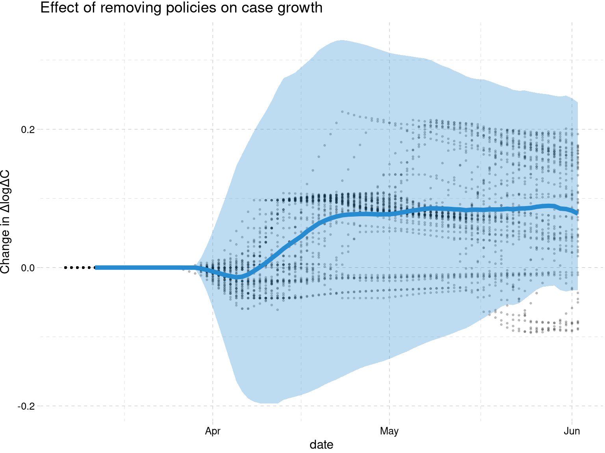
## Warning: Removed 7 rows containing missing values (geom_point).## Warning: Removed 7 row(s) containing missing values (geom_path).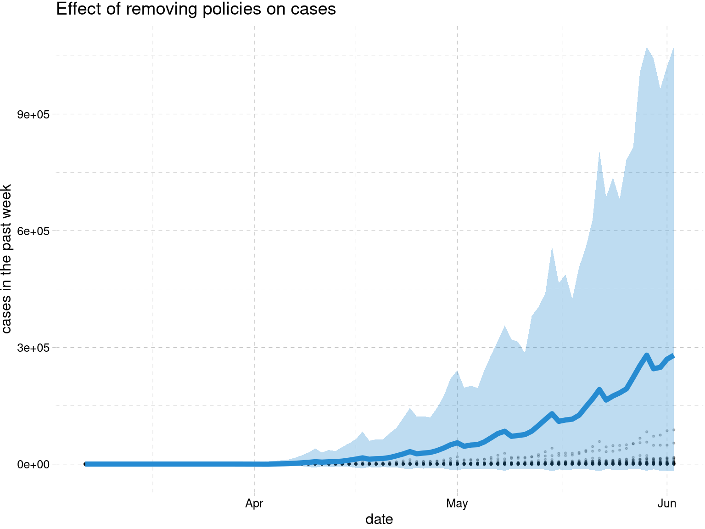
## Warning: Removed 7 row(s) containing missing values (geom_path).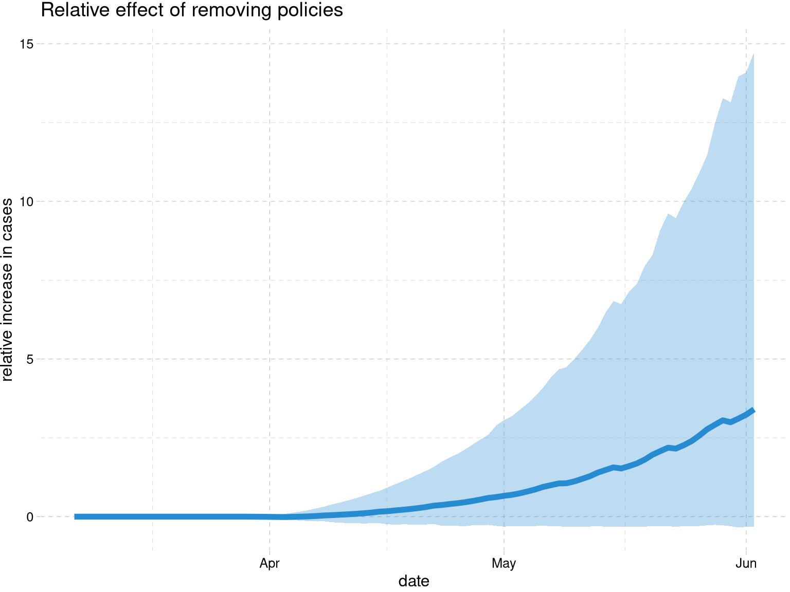
2.2 Non-Essential Business Closures
# remove non-essential business closure
cf <- sdf
cf[,"pnonessential"] <- 0
nobmodel <- createforwardsim(m, cf)## Warning in chol.default(mat, pivot = TRUE, tol = tol): the matrix is either rank-deficient or
## indefiniteif (!file.exists("cfnb_NI.Rda") || rerunsim) {
cfnblist <- lapply(unique(df$state), function(s) nopstatesim(s,simobs=simmodel,simcf=nobmodel, data=sdf))
nball <- rbindlist(lapply(cfnblist, getmeans))
save(cfnblist,nball, file="cfnb_NI.Rda")
}
load("cfnb_NI.Rda")
cfnb <- do.call(rbind, lapply(cfnblist, function(x) x$edf))cfnb <- merge(cfnb, abbrv, by="state")
for (st in c("Washington","Illinois","Massachusetts")) {
f <- cfplots(st, cfnb, data=df)
f$figp + ggtitle(sprintf("Effect of never shutting down non-essential businesses in %s",st))
#grid.arrange(f$figd + ggtitle(), f$figdp + ggtitle(), nrow=2, top =
#textGrob(st,gp=gpar(fontsize=20,font=2)))
figdev(sprintf("%s/tex/tables_and_figures/%s-nb-dgrowth.pdf",rootdir,st), width=5,height=3.75)
print(f$figdp)
dev.off()
figdev(sprintf("%s/tex/tables_and_figures/%s-nb-dcases.pdf",rootdir,st), width=5,height=3.75)
print(f$figp)
dev.off()
}## Warning: Ignoring unknown aesthetics: fill
## Warning: Ignoring unknown aesthetics: fill
## Warning: Ignoring unknown aesthetics: fill
## Warning: Ignoring unknown aesthetics: fill
## Warning: Ignoring unknown aesthetics: fill
## Warning: Ignoring unknown aesthetics: fill## Warning: Removed 5 row(s) containing missing values (geom_path).figs <- nationalplots(nball, cfnb,
"never shutting down non-essential\nbusinesses")
figdev(paste(rootdir,"tex/tables_and_figures/us-nb-dgrowth.pdf",sep="/"), width=5,height=3.75)
figs$g## Warning: Removed 12 rows containing missing values (geom_point).## Warning: Removed 12 row(s) containing missing values (geom_path).dev.off()## png
## 2figdev(paste(rootdir,"tex/tables_and_figures/us-nb-dcases.pdf",sep="/"), width=5,height=3.75)
figs$c## Warning: Removed 7 rows containing missing values (geom_point).## Warning: Removed 7 row(s) containing missing values (geom_path).dev.off()## png
## 2figdev(paste(rootdir,"tex/tables_and_figures/us-nb-rel.pdf",sep="/"), width=5,height=3.75)
figs$r## Warning: Removed 7 row(s) containing missing values (geom_path).dev.off()## png
## 2for (f in figs) print(f)## Warning: Removed 12 rows containing missing values (geom_point).## Warning: Removed 12 row(s) containing missing values (geom_path).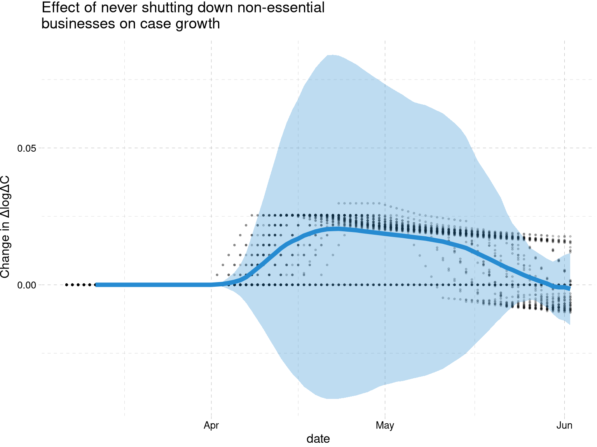
## Warning: Removed 7 rows containing missing values (geom_point).## Warning: Removed 7 row(s) containing missing values (geom_path).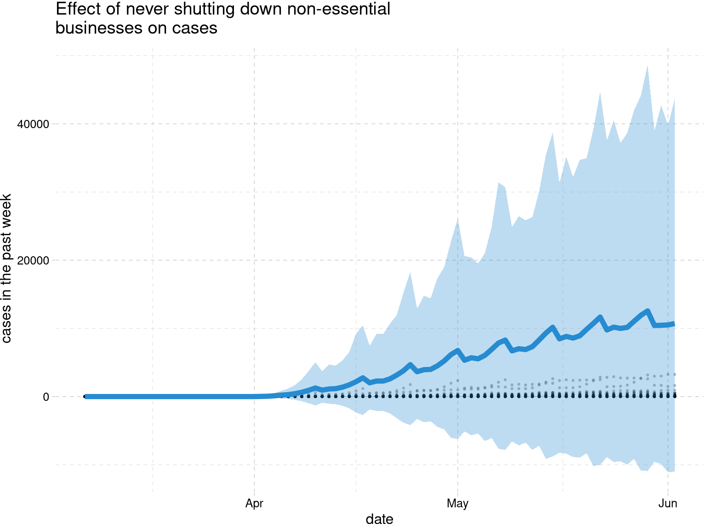
## Warning: Removed 7 row(s) containing missing values (geom_path).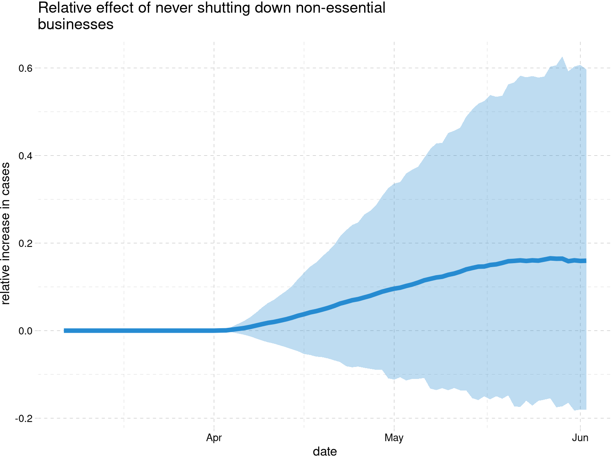
2.3 Masks
We now look at what happens when all states impose a mask mandate on April 1st.
cf <- df
cf[,"Mandate.face.mask.use.by.employees.in.public.facing.businesses"] <- as.Date("2020-04-01")
cf[,"pmaskbus"] <-
smoothedpolicy(cf,"Mandate.face.mask.use.by.employees.in.public.facing.businesses",type="ma",bw=6)
cf <- subset(cf, cf$date>=datelims[1]) #+L)
maskmodel <- createforwardsim(m, cf)
if (!file.exists("cfmask_NI.Rda") || rerunsim) {
cfmasklist <- lapply(unique(df$state), function(s) nopstatesim(s,simobs=simmodel,simcf=maskmodel, data=sdf))
maskall <- rbindlist(lapply(cfmasklist, getmeans))
save(cfmasklist, maskall, file="cfmask_NI.Rda")
}
load("cfmask_NI.Rda")
cfmask <- do.call(rbind, lapply(cfmasklist, function(x) x$edf))cfmask <- merge(cfmask, abbrv, by="state")
for (st in c("Washington","Illinois","Massachusetts")) {
f <- cfplots(st, cfmask, data=df)
print(f$figp + ggtitle(sprintf("Effect of mandating masks on April 1st in %s",st)))
figdev(sprintf("%s/tex/tables_and_figures/%s-mask-growth.pdf",rootdir,st), width=5,height=3.75)
print(f$figd + ylim(c(-1,5)))
dev.off()
figdev(sprintf("%s/tex/tables_and_figures/%s-mask-dgrowth.pdf",rootdir,st), width=5,height=3.75)
print(f$figdp)
dev.off()
figdev(sprintf("%s/tex/tables_and_figures/%s-mask-dcases.pdf",rootdir,st), width=5,height=3.75)
print(f$figp)
dev.off()
}## Warning: Ignoring unknown aesthetics: fill
## Warning: Ignoring unknown aesthetics: fill
## Warning: Ignoring unknown aesthetics: fill
## Warning: Ignoring unknown aesthetics: fill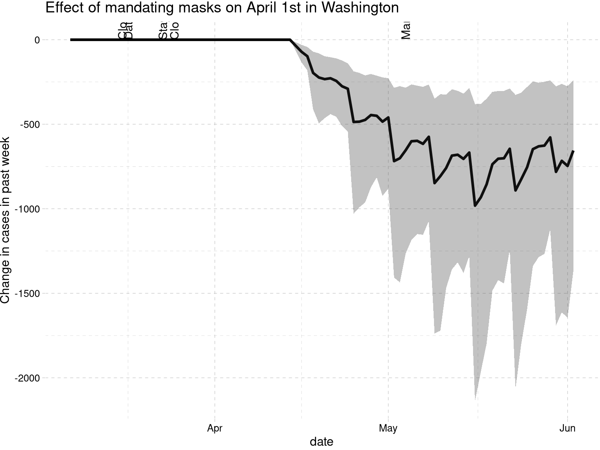
## Warning: Ignoring unknown aesthetics: fill
## Warning: Ignoring unknown aesthetics: fill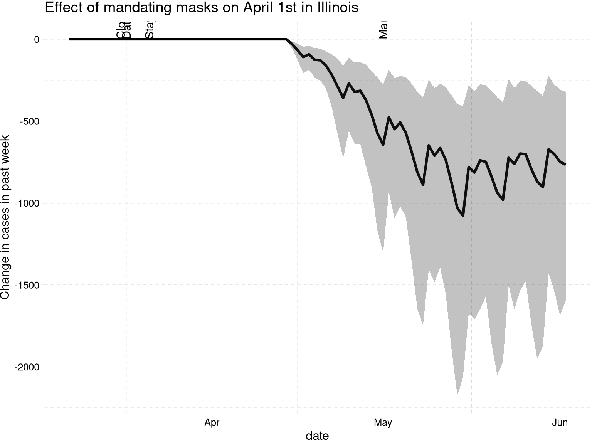
## Warning: Removed 5 row(s) containing missing values (geom_path).## Warning: Removed 5 row(s) containing missing values (geom_path).
## Warning: Removed 5 row(s) containing missing values (geom_path).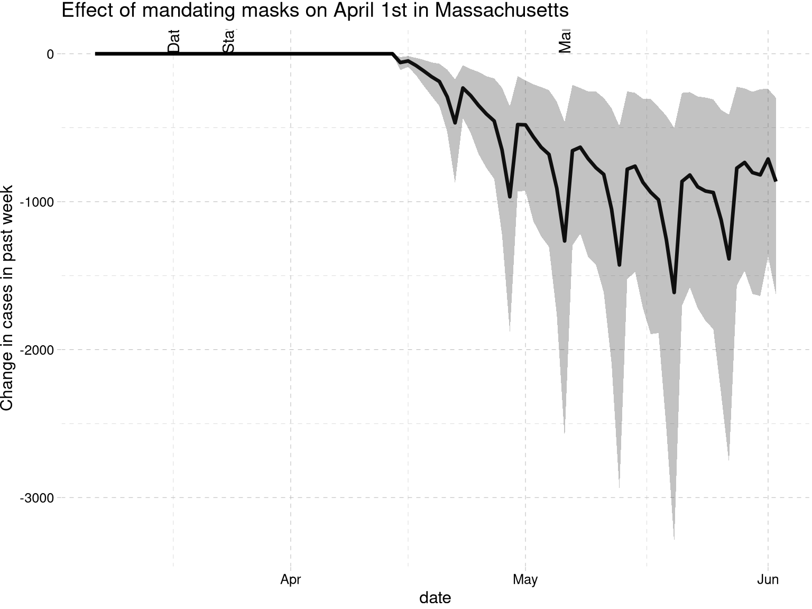
figs <- nationalplots(maskall, cfmask, "mandating masks on April 1st\n")
figdev(paste(rootdir,"tex/tables_and_figures/us-mask-dgrowth.pdf",sep="/"), width=5,height=3.75)
figs$g## Warning: Removed 12 rows containing missing values (geom_point).## Warning: Removed 12 row(s) containing missing values (geom_path).dev.off()## png
## 2figdev(paste(rootdir,"tex/tables_and_figures/us-mask-dcases.pdf",sep="/"), width=5,height=3.75)
figs$c## Warning: Removed 7 rows containing missing values (geom_point).## Warning: Removed 7 row(s) containing missing values (geom_path).dev.off()## png
## 2figdev(paste(rootdir,"tex/tables_and_figures/us-mask-rel.pdf",sep="/"), width=5,height=3.75)
figs$r## Warning: Removed 7 row(s) containing missing values (geom_path).dev.off()## png
## 2for (f in figs) print(f)## Warning: Removed 12 rows containing missing values (geom_point).## Warning: Removed 12 row(s) containing missing values (geom_path).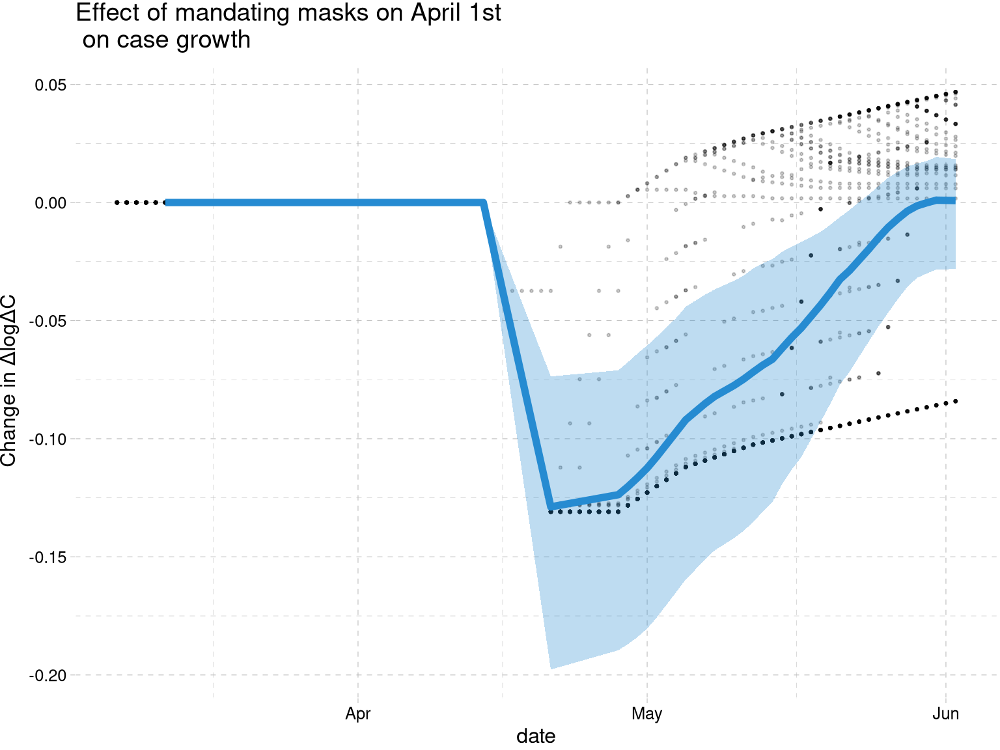
## Warning: Removed 7 rows containing missing values (geom_point).## Warning: Removed 7 row(s) containing missing values (geom_path).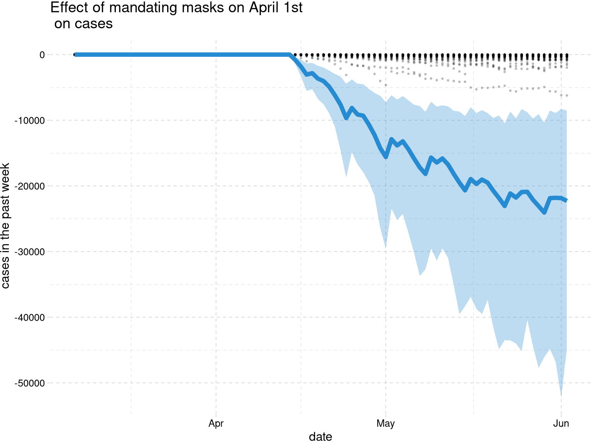
## Warning: Removed 7 row(s) containing missing values (geom_path).
2.4 Stay at home
We now look at what happens if stay at home orders were never issued.
cf <- df
cf[,"pshelter"] <- 0
cf <- subset(cf, cf$date>=datelims[1]) #+L)
noshelter <- createforwardsim(m, cf)## Warning in chol.default(mat, pivot = TRUE, tol = tol): the matrix is either rank-deficient or
## indefiniteif (!file.exists("cfshelter_NI.Rda") || rerunsim) {
cfshelterlist <- lapply(unique(df$state), function(s) nopstatesim(s,simobs=simmodel,simcf=noshelter, data=sdf))
shelterall <- rbindlist(lapply(cfshelterlist, getmeans))
save(cfshelterlist, shelterall, file="cfshelter_NI.Rda")
}
load("cfshelter_NI.Rda")
cfshelter <- do.call(rbind, lapply(cfshelterlist, function(x) x$edf))cfshelter <- merge(cfshelter, abbrv, by="state")
for (st in c("Washington","Illinois","Massachusetts")) {
f <- cfplots(st, cfshelter, data=df)
print(f$figp + ggtitle(sprintf("Effect of no stay at home order in %s",st)))
figdev(sprintf("%s/tex/tables_and_figures/%s-shelter-dgrowth.pdf",rootdir,st), width=5,height=3.75)
print(f$figdp)
dev.off()
figdev(sprintf("%s/tex/tables_and_figures/%s-shelter-dcases.pdf",rootdir,st), width=5,height=3.75)
print(f$figp)
dev.off()
}## Warning: Ignoring unknown aesthetics: fill
## Warning: Ignoring unknown aesthetics: fill
## Warning: Ignoring unknown aesthetics: fill
## Warning: Ignoring unknown aesthetics: fill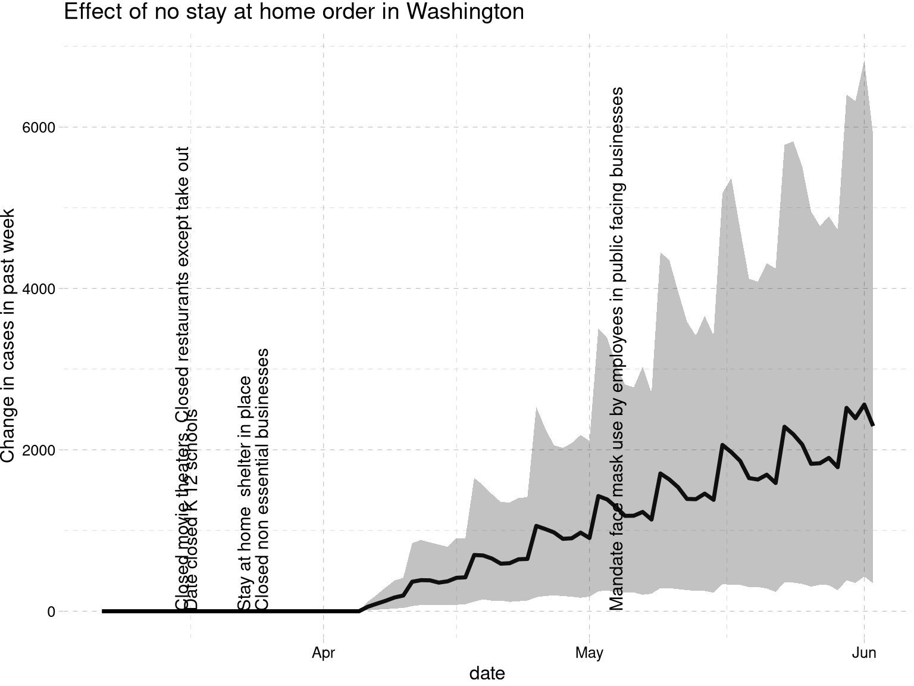
## Warning: Ignoring unknown aesthetics: fill
## Warning: Ignoring unknown aesthetics: fill
## Warning: Removed 5 row(s) containing missing values (geom_path).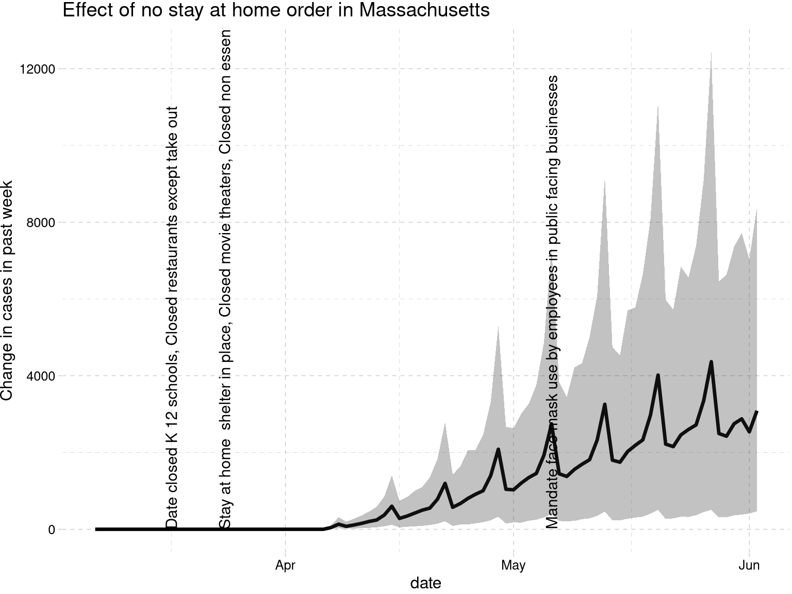
figs <- nationalplots(shelterall, cfshelter, "no stay at home orders")
figdev(paste(rootdir,"tex/tables_and_figures/us-shelter-dgrowth.pdf",sep="/"), width=5,height=3.75)
figs$g## Warning: Removed 12 rows containing missing values (geom_point).## Warning: Removed 12 row(s) containing missing values (geom_path).dev.off()## png
## 2figdev(paste(rootdir,"tex/tables_and_figures/us-shelter-dcases.pdf",sep="/"), width=5,height=3.75)
figs$c## Warning: Removed 7 rows containing missing values (geom_point).## Warning: Removed 7 row(s) containing missing values (geom_path).dev.off()## png
## 2figdev(paste(rootdir,"tex/tables_and_figures/us-shelter-rel.pdf",sep="/"), width=5,height=3.75)
figs$r## Warning: Removed 7 row(s) containing missing values (geom_path).dev.off()## png
## 2for (f in figs) print(f)## Warning: Removed 12 rows containing missing values (geom_point).## Warning: Removed 12 row(s) containing missing values (geom_path).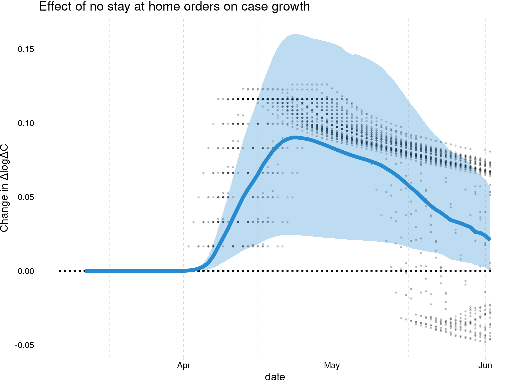
## Warning: Removed 7 rows containing missing values (geom_point).## Warning: Removed 7 row(s) containing missing values (geom_path).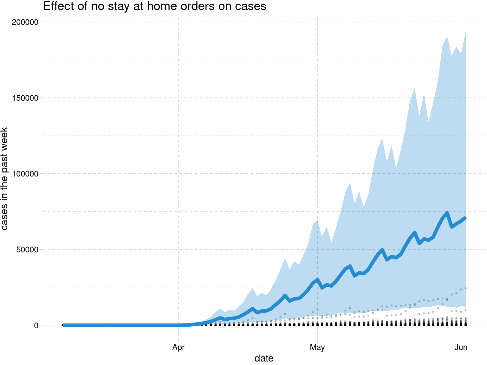
## Warning: Removed 7 row(s) containing missing values (geom_path).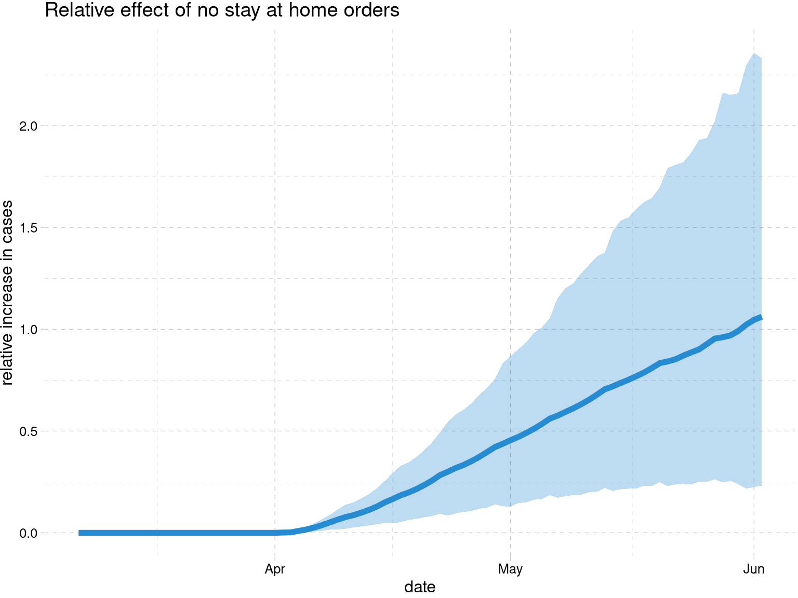
3 Deaths
infovars <- list(c("dlogdd", "logdd", "dlogdd.national", "logdd.national")) #,
#c("dlogdc", "logdc"))
#infovars2 <- list(c( "logdc"))
tvars <- NULL
xlist <-list("")
interactions <-list("month", statevars)
ilist <- list(interactions) #, interactions)
iv <- list("0") #,"(testratedc ~ lag(testratedc,14))")
L <- 21
sdf <- subset(df, df$date>=datelims[1]) #+L)
regs <- mainregressions(sdf,
"dlogdd", pols, bvars, infovars, tvars, xlist, ilist, iv, L=L)
m <- regs$piy[[1]]$reg
cnames <- c(pols, infovars[[1]])
di <- dieff_table(lapply(regs$pib[[1]][1:4], function(x) x$reg$coef[,1]),
regs$pbiy[[1]]$reg$coef[,1],
regs$piy[[1]]$reg$coef[,1],
policies=cnames)
pib <- lapply(regs$pib[[1]][1:4], function(x) x$reg)
pbiy <- regs$pbiy[[1]]$reg
piy <- regs$piy[[1]]$reg
S <- 999
bs <- bootstrap_felm(sdf, c(pib,list(pbiy,piy)), S=S)
bdi <- lapply(1:S, function(i)
dieff_table(lapply(1:4, function(j) bs[[j]][,i]),
bs[[5]][,i], bs[[6]][,i],
policies=cnames)
)
bcoefs <- t(do.call(cbind, lapply(1:S, function(i) {
coef <- matrix(bs[[6]][,i],ncol=1)
rownames(coef) <- rownames(bs[[6]])
return(subcoefs(bdi[[i]],coef ))
})))
V <- cov(bcoefs)
m$coefficients <- subcoefs(di, m$coefficients)
m$vcv <- V
m$clustervcv <- V
m$robustvcv <- V
simmodel <- createforwardsim(m, sdf, dvar="dlogdd", var="logdd")
# remove policies
cf <- sdf
cf[,pols] <- 0
nopmodel <- createforwardsim(m, cf, dvar="dlogdd", var="logdd")## Warning in chol.default(mat, pivot = TRUE, tol = tol): the matrix is either rank-deficient or
## indefinitererunsim=FALSE
if (!file.exists("cfnop_deaths_NI.Rda") || rerunsim) {
cfnoplist <- lapply(unique(df$state), function(s)
nopstatesim(s,simobs=simmodel,simcf=nopmodel, data=sdf, var="logdd", dvar="dlogdd"))
allmeans <- rbindlist(lapply(cfnoplist, getmeans))
save(cfnoplist,allmeans, file="cfnop_deaths_NI.Rda")
}
load("cfnop_deaths_NI.Rda")
cfnop <- do.call(rbind, lapply(cfnoplist, function(x) x$edf))3.0.1 Removing Policies
st <- "Washington"
f <- cfplots(st, cfnop, yvar="deaths", data=df)## Warning: Ignoring unknown aesthetics: fill
## Warning: Ignoring unknown aesthetics: fillgrid.arrange(f$figd, f$figdp, nrow=2, top =
textGrob(st,gp=gpar(fontsize=20,font=2)))Case growth without policies in Washington
grid.arrange(f$figl, f$figp, nrow=2) #,Cases without policies in Washington
#top = textGrob(st,gp=gpar(fontsize=20,font=2)))if (!knitr::is_latex_output()) {
for( st in c("New York", "Florida", "Michigan", "Georgia", "Massachusetts")) {
f <- cfplots(st, cfnop, yvar="deaths", data=df)
grid.arrange(f$figd, f$figdp, nrow=2, top = textGrob(st,gp=gpar(fontsize=20, font=2)))
grid.arrange(f$figl, f$figp, nrow=2, top = textGrob(st,gp=gpar(fontsize=20, font=2)))
}
}## Warning: Ignoring unknown aesthetics: fill
## Warning: Ignoring unknown aesthetics: fillEffect of Removing Policies
## Warning: Ignoring unknown aesthetics: fill
## Warning: Ignoring unknown aesthetics: fillEffect of Removing Policies
Effect of Removing Policies
## Warning: Ignoring unknown aesthetics: fill
## Warning: Ignoring unknown aesthetics: fillEffect of Removing Policies
Effect of Removing Policies
## Warning: Ignoring unknown aesthetics: fill
## Warning: Ignoring unknown aesthetics: fill
Effect of Removing Policies
Effect of Removing Policies
## Warning: Ignoring unknown aesthetics: fill
## Warning: Ignoring unknown aesthetics: fillEffect of Removing Policies

Effect of Removing Policies
Effect of Removing Policies
states <- c("Washington","Illinois","Massachusetts")
for(st in states) {
f <- cfplots(st, cfnop, yvar="deaths", data=df)
figdev(sprintf("%s/tex/tables_and_figures/%s-nop-dgrowth_deaths.pdf",rootdir,st), width=5,height=3.75)
print(f$figdp)
dev.off()
figdev(sprintf("%s/tex/tables_and_figures/%s-nop-growth_deaths.pdf",rootdir,st), width=5,height=3.75)
print(f$figd + ylim(c(-1,5)))
dev.off()
figdev(sprintf("%s/tex/tables_and_figures/%s-nop-cases_deaths.pdf",rootdir,st), width=5,height=3.75)
print(f$figl)
dev.off()
figdev(sprintf("%s/tex/tables_and_figures/%s-nop-dcases_deaths.pdf",rootdir,st), width=5,height=3.75)
print(f$figp)
dev.off()
}3.1 National
abbrv <- unique(df[,c("state","ST")])
cfnop <- merge(cfnop, abbrv, by="state")
figs <- nationalplots(allmeans,cfnop, "removing policies", yvar="deaths")
figdev(paste(rootdir,"tex/tables_and_figures/us-nop-dgrowth_deaths.pdf",sep="/"), width=5,height=3.75)
figs$g## Warning: Removed 7 row(s) containing missing values (geom_path).dev.off()## png
## 2figdev(paste(rootdir,"tex/tables_and_figures/us-nop-dcases_deaths.pdf",sep="/"), width=5,height=3.75)
figs$c## Warning: Removed 7 row(s) containing missing values (geom_path).dev.off()## png
## 2figdev(paste(rootdir,"tex/tables_and_figures/us-nop-rel_deaths.pdf",sep="/"), width=5,height=3.75)
figs$r## Warning: Removed 7 row(s) containing missing values (geom_path).dev.off()## png
## 2for (f in figs) print(f)## Warning: Removed 7 row(s) containing missing values (geom_path).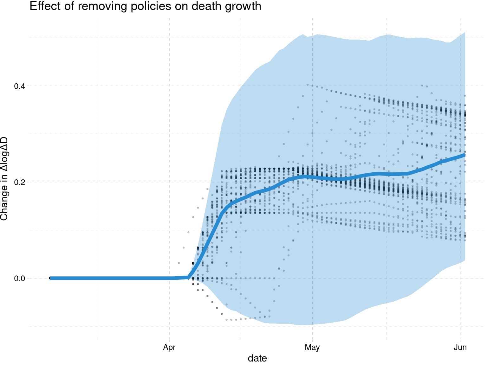
## Warning: Removed 7 row(s) containing missing values (geom_path).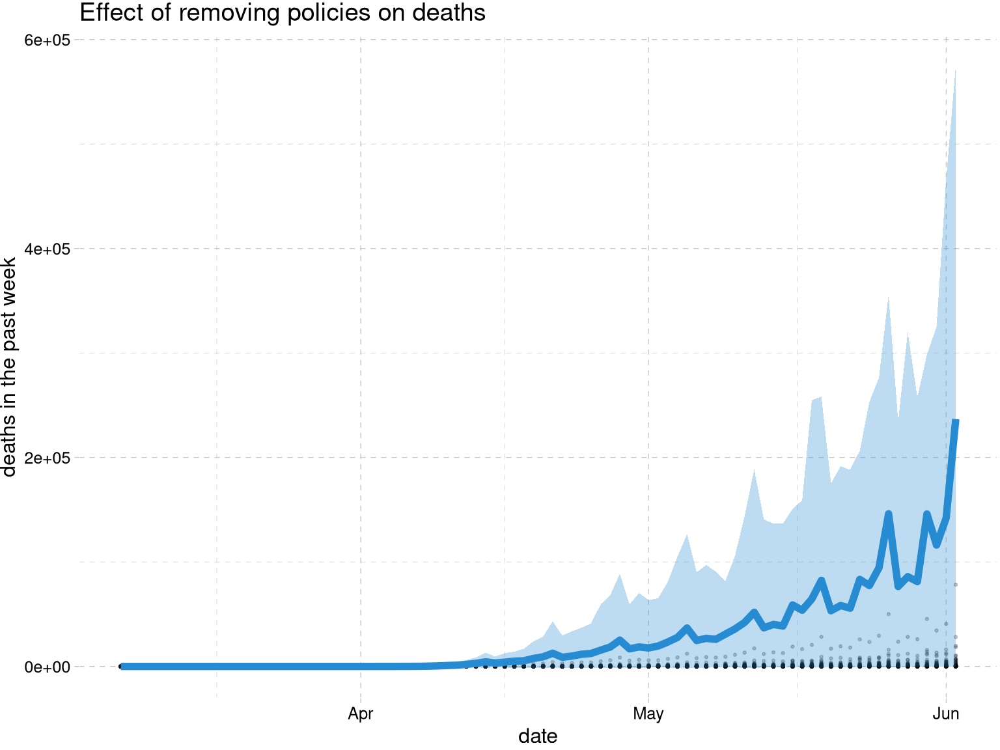
## Warning: Removed 7 row(s) containing missing values (geom_path).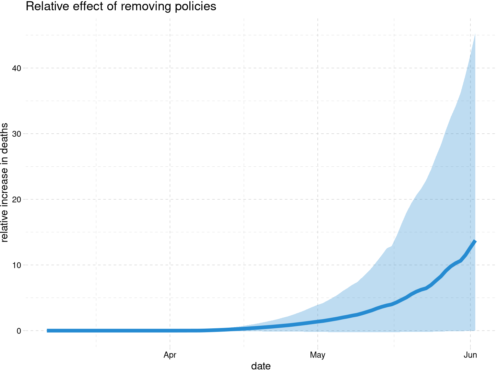
3.2 Non-Essential Business Closures
# remove non-essential business closure
cf <- sdf
cf[,"pnonessential"] <- 0
nobmodel <- createforwardsim(m, cf, dvar="dlogdd", var="logdd")## Warning in chol.default(mat, pivot = TRUE, tol = tol): the matrix is either rank-deficient or
## indefiniteif (!file.exists("cfnb_deaths_NI.Rda") || rerunsim) {
cfnblist <- lapply(unique(df$state), function(s) nopstatesim(s,simobs=simmodel,simcf=nobmodel, data=sdf, var="logdd", dvar="dlogdd"))
nball <- rbindlist(lapply(cfnblist, getmeans))
save(cfnblist,nball, file="cfnb_deaths_NI.Rda")
}
load("cfnb_deaths_NI.Rda")
cfnb <- do.call(rbind, lapply(cfnblist, function(x) x$edf))cfnb <- merge(cfnb, abbrv, by="state")
for (st in c("Washington","Illinois","Massachusetts")) {
f <- cfplots(st, cfnb, yvar="deaths", data=df)
f$figp + ggtitle(sprintf("Effect of never shutting down non-essential businesses in %s",st))
#grid.arrange(f$figd + ggtitle(), f$figdp + ggtitle(), nrow=2, top =
#textGrob(st,gp=gpar(fontsize=20,font=2)))
figdev(sprintf("%s/tex/tables_and_figures/%s-nb-dgrowth_deaths.pdf",rootdir,st), width=5,height=3.75)
print(f$figdp)
dev.off()
figdev(sprintf("%s/tex/tables_and_figures/%s-nb-dcases_deaths.pdf",rootdir,st), width=5,height=3.75)
print(f$figp)
dev.off()
}## Warning: Ignoring unknown aesthetics: fill
## Warning: Ignoring unknown aesthetics: fill
## Warning: Ignoring unknown aesthetics: fill
## Warning: Ignoring unknown aesthetics: fill
## Warning: Ignoring unknown aesthetics: fill
## Warning: Ignoring unknown aesthetics: fillfigs <- nationalplots(nball, cfnb,
"never shutting down non-essential\nbusinesses", yvar="deaths")
figdev(paste(rootdir,"tex/tables_and_figures/us-nb-dgrowth_deaths.pdf",sep="/"), width=5,height=3.75)
figs$g## Warning: Removed 7 row(s) containing missing values (geom_path).dev.off()## png
## 2figdev(paste(rootdir,"tex/tables_and_figures/us-nb-dcases_deaths.pdf",sep="/"), width=5,height=3.75)
figs$c## Warning: Removed 7 row(s) containing missing values (geom_path).dev.off()## png
## 2figdev(paste(rootdir,"tex/tables_and_figures/us-nb-rel_deaths.pdf",sep="/"), width=5,height=3.75)
figs$r## Warning: Removed 7 row(s) containing missing values (geom_path).dev.off()## png
## 2for (f in figs) print(f)## Warning: Removed 7 row(s) containing missing values (geom_path).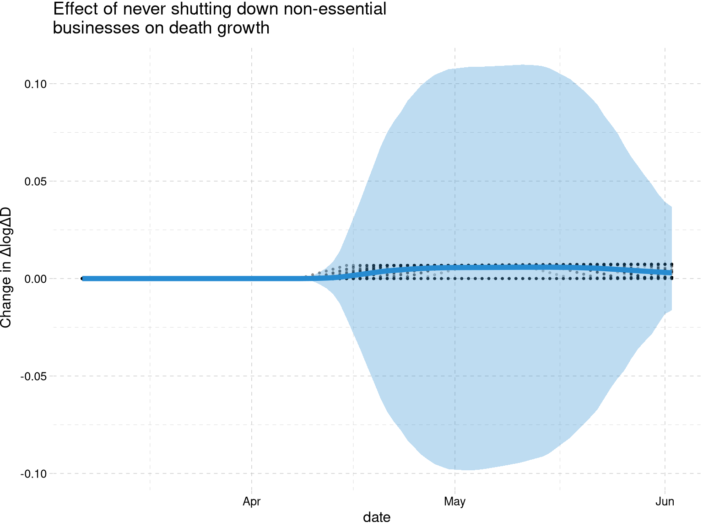
## Warning: Removed 7 row(s) containing missing values (geom_path).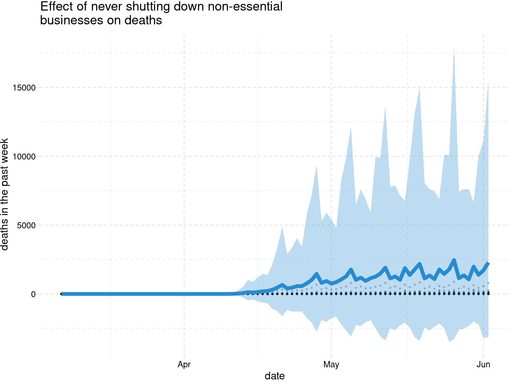
## Warning: Removed 7 row(s) containing missing values (geom_path).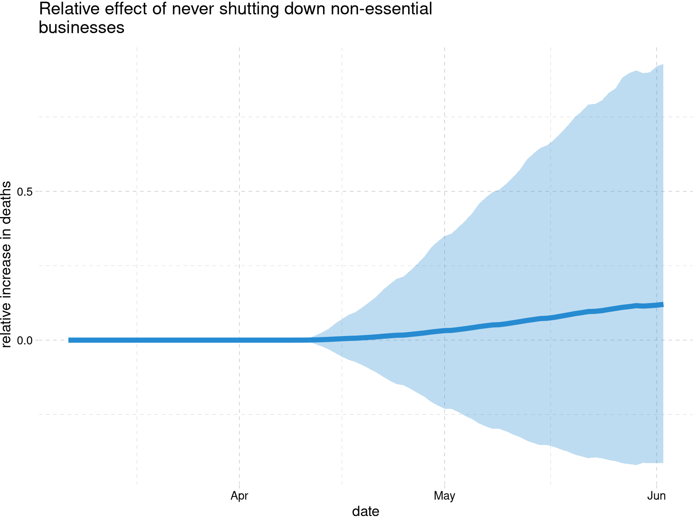
3.3 Masks
We now look at what happens when all states impose a mask mandate on April 1st.
cf <- df
cf[,"Mandate.face.mask.use.by.employees.in.public.facing.businesses"] <- as.Date("2020-04-01")
cf[,"pmaskbus"] <-
smoothedpolicy(cf,"Mandate.face.mask.use.by.employees.in.public.facing.businesses",type="ma",bw=6)
cf <- subset(cf, cf$date>=datelims[1]) #+L)
maskmodel <- createforwardsim(m, cf, dvar="dlogdd", var="logdd")
if (!file.exists("cfmask_deaths_NI.Rda") || rerunsim) {
cfmasklist <- lapply(unique(df$state), function(s) nopstatesim(s,simobs=simmodel,simcf=maskmodel, data=sdf, var="logdd", dvar="dlogdd"))
maskall <- rbindlist(lapply(cfmasklist, getmeans))
save(cfmasklist, maskall, file="cfmask_deaths_NI.Rda")
}
load("cfmask_deaths_NI.Rda")
cfmask <- do.call(rbind, lapply(cfmasklist, function(x) x$edf))cfmask <- merge(cfmask, abbrv, by="state")
for (st in c("Washington","Illinois","Massachusetts")) {
f <- cfplots(st, cfmask, yvar="deaths", data=df)
print(f$figp + ggtitle(sprintf("Effect of mandating masks on April 1st in %s",st)))
figdev(sprintf("%s/tex/tables_and_figures/%s-mask-growth_deaths.pdf",rootdir,st), width=5,height=3.75)
print(f$figd + ylim(c(-1,5)))
dev.off()
figdev(sprintf("%s/tex/tables_and_figures/%s-mask-dgrowth_deaths.pdf",rootdir,st), width=5,height=3.75)
print(f$figdp)
dev.off()
figdev(sprintf("%s/tex/tables_and_figures/%s-mask-dcases_deaths.pdf",rootdir,st), width=5,height=3.75)
print(f$figp)
dev.off()
}## Warning: Ignoring unknown aesthetics: fill
## Warning: Ignoring unknown aesthetics: fill
## Warning: Ignoring unknown aesthetics: fill
## Warning: Ignoring unknown aesthetics: fill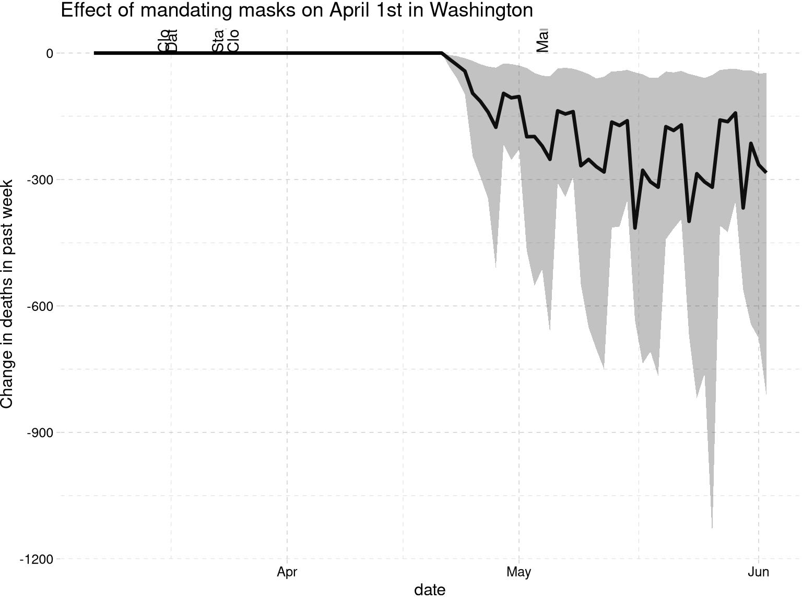
## Warning: Ignoring unknown aesthetics: fill
## Warning: Ignoring unknown aesthetics: fill 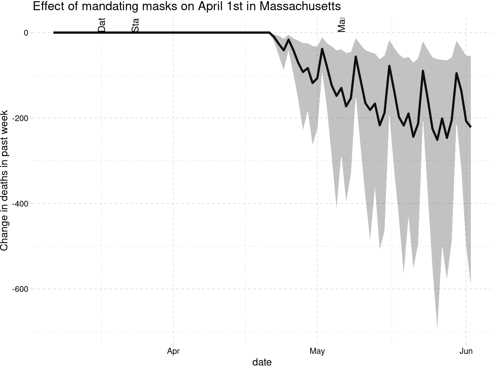
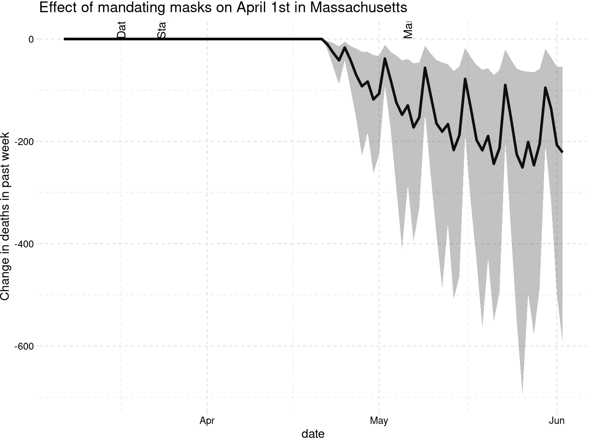
figs <- nationalplots(maskall, cfmask, "mandating masks on April 1st\n", yvar="deaths")
figdev(paste(rootdir,"tex/tables_and_figures/us-mask-dgrowth_deaths.pdf",sep="/"), width=5,height=3.75)
figs$g## Warning: Removed 7 row(s) containing missing values (geom_path).dev.off()## png
## 2figdev(paste(rootdir,"tex/tables_and_figures/us-mask-dcases_deaths.pdf",sep="/"), width=5,height=3.75)
figs$c## Warning: Removed 7 row(s) containing missing values (geom_path).dev.off()## png
## 2figdev(paste(rootdir,"tex/tables_and_figures/us-mask-rel_deaths.pdf",sep="/"), width=5,height=3.75)
figs$r## Warning: Removed 7 row(s) containing missing values (geom_path).dev.off()## png
## 2for (f in figs) print(f)## Warning: Removed 7 row(s) containing missing values (geom_path).
## Warning: Removed 7 row(s) containing missing values (geom_path).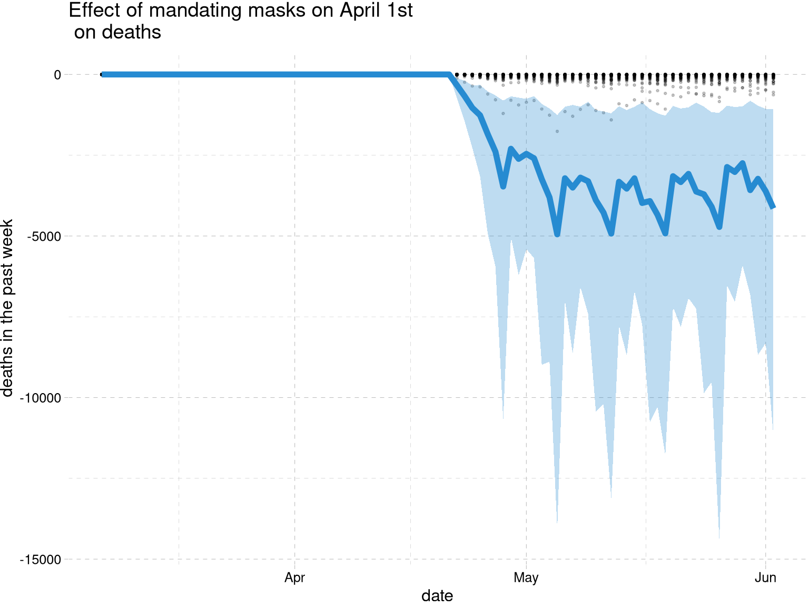
## Warning: Removed 7 row(s) containing missing values (geom_path).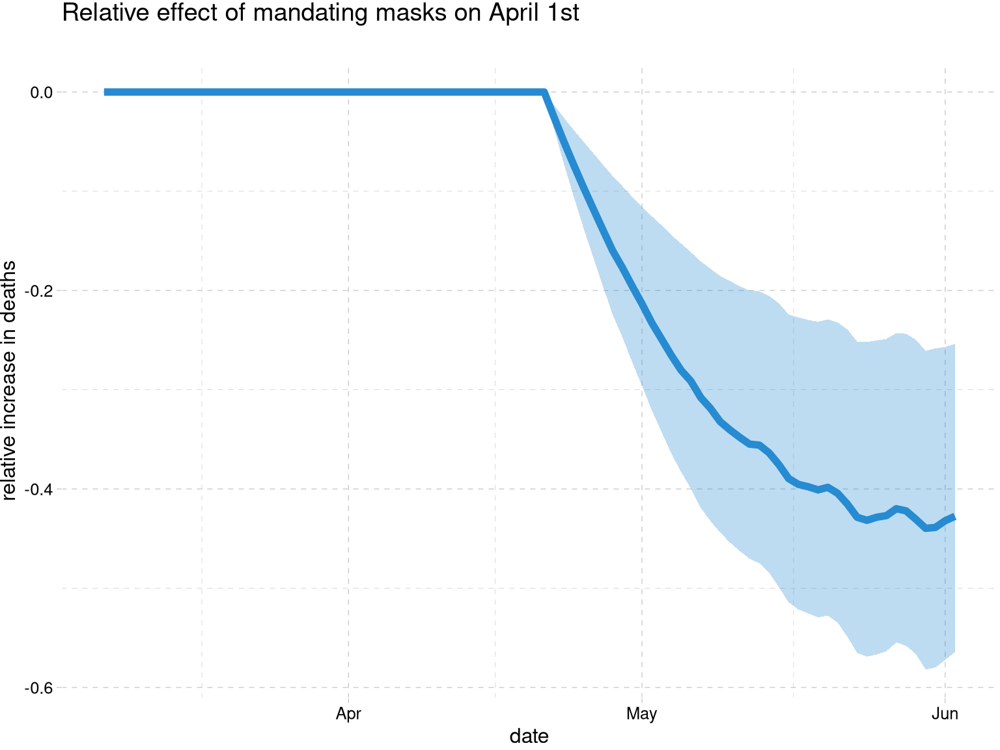
3.4 Stay at home
We now look at what happens if stay at home orders were never issued.
cf <- df
cf[,"pshelter"] <- 0
cf <- subset(cf, cf$date>=datelims[1]) #+L)
noshelter <- createforwardsim(m, cf, dvar="dlogdd", var="logdd")## Warning in chol.default(mat, pivot = TRUE, tol = tol): the matrix is either rank-deficient or
## indefiniteif (!file.exists("cfshelter_deaths_NI.Rda") || rerunsim) {
cfshelterlist <- lapply(unique(df$state), function(s) nopstatesim(s,simobs=simmodel,simcf=noshelter, data=sdf))
shelterall <- rbindlist(lapply(cfshelterlist, getmeans))
save(cfshelterlist, shelterall, file="cfshelter_deaths_NI.Rda")
}
load("cfshelter_deaths_NI.Rda")
cfshelter <- do.call(rbind, lapply(cfshelterlist, function(x) x$edf))cfshelter <- merge(cfshelter, abbrv, by="state")
for (st in c("Washington","Illinois","Massachusetts")) {
f <- cfplots(st, cfshelter, data=df, yvar="deaths")
print(f$figp + ggtitle(sprintf("Effect of no stay at home order in %s",st)))
figdev(sprintf("%s/tex/tables_and_figures/%s-shelter-dgrowth_deaths.pdf",rootdir,st), width=5,height=3.75)
print(f$figdp)
dev.off()
figdev(sprintf("%s/tex/tables_and_figures/%s-shelter-dcases_deaths.pdf",rootdir,st), width=5,height=3.75)
print(f$figp)
dev.off()
}## Warning: Ignoring unknown aesthetics: fill
## Warning: Ignoring unknown aesthetics: fill
## Warning: Ignoring unknown aesthetics: fill
## Warning: Ignoring unknown aesthetics: fill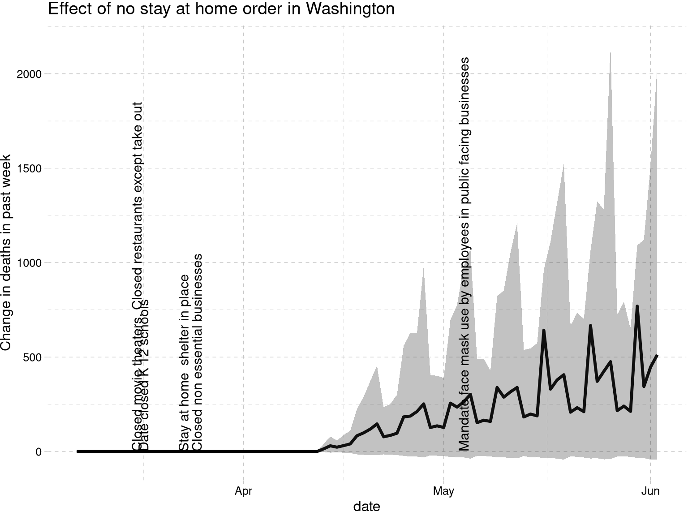
## Warning: Ignoring unknown aesthetics: fill
## Warning: Ignoring unknown aesthetics: fill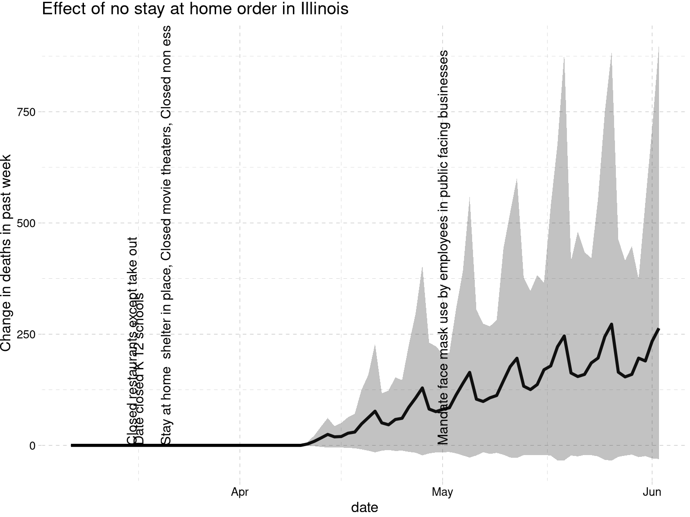
figs <- nationalplots(shelterall, cfshelter, "no stay at home orders", yvar="deaths")
figdev(paste(rootdir,"tex/tables_and_figures/us-shelter-dgrowth_deaths.pdf",sep="/"), width=5,height=3.75)
figs$g## Warning: Removed 7 row(s) containing missing values (geom_path).dev.off()## png
## 2figdev(paste(rootdir,"tex/tables_and_figures/us-shelter-dcases_deaths.pdf",sep="/"), width=5,height=3.75)
figs$c## Warning: Removed 7 row(s) containing missing values (geom_path).dev.off()## png
## 2figdev(paste(rootdir,"tex/tables_and_figures/us-shelter-rel_deaths.pdf",sep="/"), width=5,height=3.75)
figs$r## Warning: Removed 7 row(s) containing missing values (geom_path).dev.off()## png
## 2for (f in figs) print(f)## Warning: Removed 7 row(s) containing missing values (geom_path).## Warning: Removed 7 row(s) containing missing values (geom_path).## Warning: Removed 7 row(s) containing missing values (geom_path).